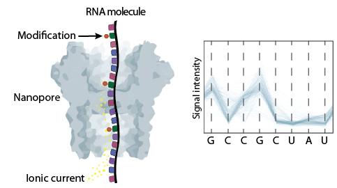
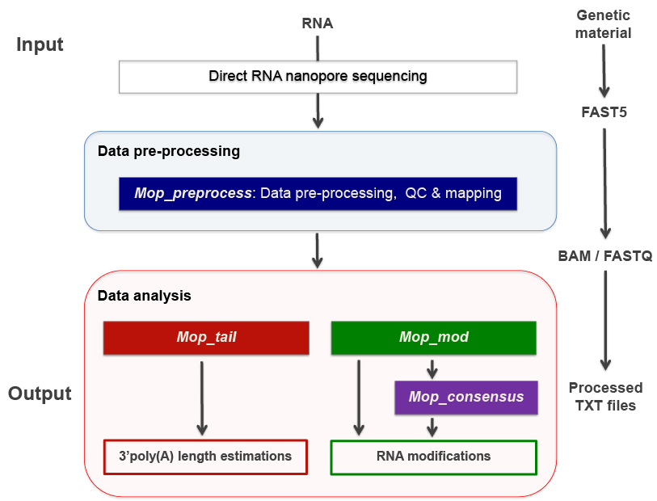
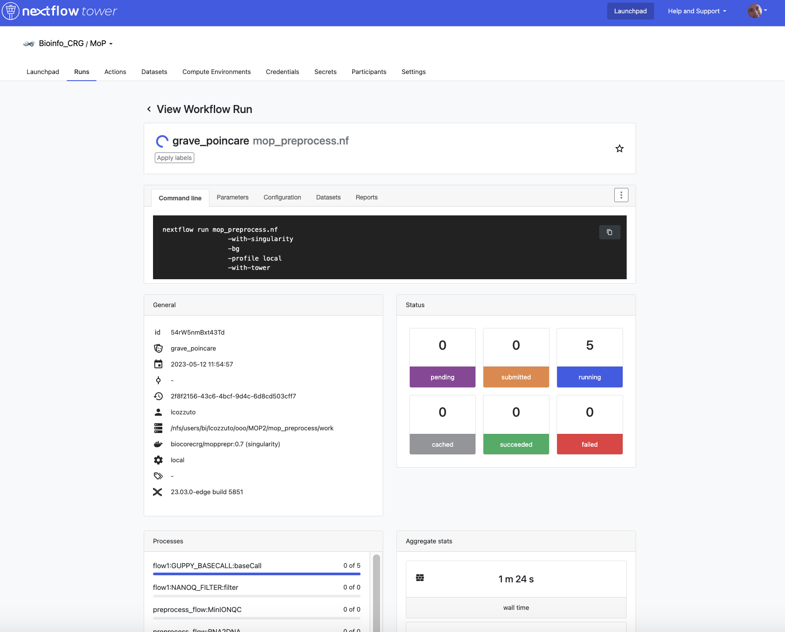
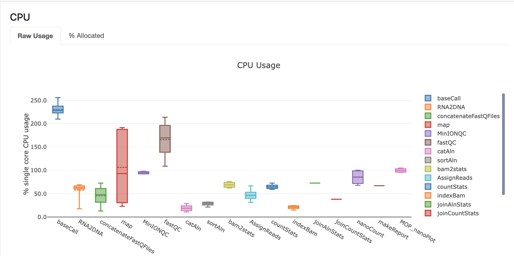
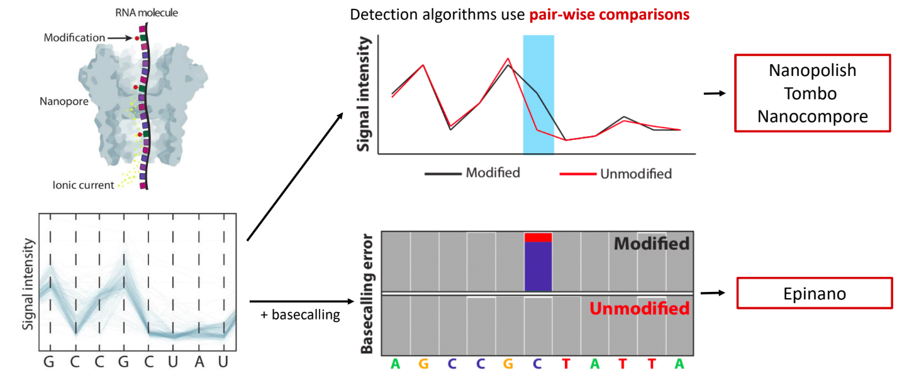
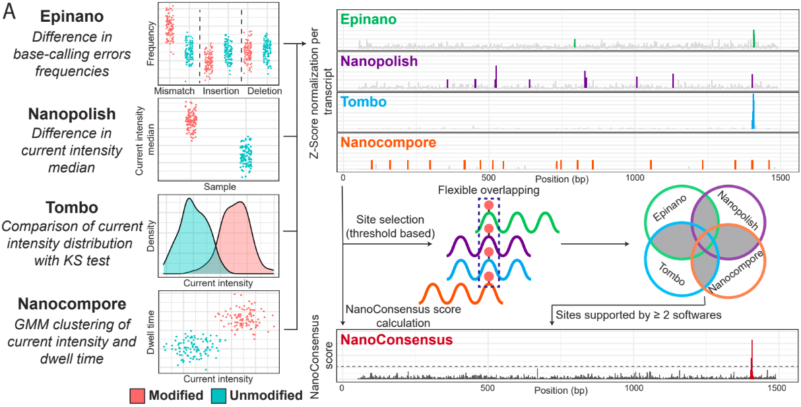

Master of Pores 2
Basics of Direct RNA Sequencing (DRS)
Direct RNA sequencing is a technology developed by Oxford Nanopore Technologies (ONT) that allows the sequencing of native RNA molecules without the need of previous amplification nor fragmentation. Therefore, it can provide information about the presence of RNA modifications, polyA tail length and composition at per-read level.
This method is based on the use of protein nanopores that are embedded into a membrane. As the molecule goes through the pore, it alters the ionic current that is applied to it. These changes are then stored in fast5 files.
{kind=link}
Master Of Pores 2 (MOP2) - preprocessing and polyA tail estimation (1)
The complexity of analysing current intensity data together with the lack of systematic and reproducible pipelines have hindered the access of this technology to the general users. To overcome this limitation, we developed Master Of Pores (MoP) - a nextflow based workflow that simplifies the analysis of DRS datasets and aims to make it accessible to non-bioinformatic experts. We further improved this suit making a new version (MoP2).
For more information you can read our pubblications:
MOP2 can perform all steps required to analyse DRS data - from converting raw current intensities into multiple types of processed data to RNA modified sites detection and polyA tail length predictions. This pipeline consists of four modules: mop_preprocess, mop_tail, mop_mod and mop_consensus.
{kind=link}
Basic preprocessing (module: mop_preprocessing)
The pre-processing module is able to perform basecalling, mapping (either to a genome or a transcriptome), feature counting (per-gene level) and quality control. Furthermore, if required by the user, it can run demultiplexing, filtering and discovery of novel transcripts. As the final step, the workflow generates a final report of the performance and results of each of the steps performed.
Note
Before proceeding to any other downstream analysis such as RNA modification detection and polyA tail analysis, this module must be executed.
Analysis overview:
Step 1: Demultiplexing
Demultiplexing is required when analysing a barcoded sample; otherwise, this step is not necessary. Deeplexicon is used when analysing dRNA. This algorithm converts the barcode’s signal into an image, which is then classified based on a machine-learning approach. For cDNA, DNA and metDNA you can specify within the parameters to use Guppy.
Input: Raw fast5 files
Output: Demuxed raw fast5 files
Step 2: Basecalling
It is the process by which the current intensity data is translated into a nucleotide sequence by a machine learning algorithm called basecaller. Currently, the most widely used is Guppy, which was developed by ONT and it is only available if you are part of the ONT community. The model that Guppy uses to analyse RNA data is not modification aware and therefore, it can only identify the four canonical bases (A, U, C and G).
Input: Raw fast5 files
Output: Basecalled fast5 and fastq files
Step 3: Filtering
Filter out reads based on either quality and/or length performed by Nanofilt. For RNA modification detection using DRS data, this step should be turned off as modified reads tend to have lower quality than unmodified ones and thus, filtering based on quality would bias the results.
Input: Fastq files
Output: Filtered fastq files
Step 4: Alignment
Mapping step performed by either minimap2 or grapmap. Both can perform spliced or unspliced alignments. Briefly, we would use spliced alignments when using a genome as a reference and; unspliced for transcriptome. Furthermore, it has been reported that minimap2 fails to align highly modified reads and thus, it should not be used to analyse data from highly modified RNA species such as rRNAs.
Input: Fastq files and reference file (genome or transcriptome)
Output: Bam (and bai) files
Step 5: Gene/transcript counts
The software run by MOP2 to perform this step depends on the type of reference used in the mapping step. For transcriptome alignments, NanoCount is used and it reports per transcript abundances whereas for genome alignments, htseq-count is executed and it generates per-gene counts.
Input: Reference and alignment file (bam) for NanoCount // Reference, annotation (.gtf) and alignment files (.bam) for htseq-count
Output: Transcript abundances’ estimations // Per-gene counts
Step 5: Transcript discovery
Bambu aims to identify novel transcripts from mapped reads. For more information about how to use this tool, please visit its GitHub page.
Input: Alignment (.bam), reference (.fa) and annotation (.gtf)
Output: Transcript’s abundances and read id-transcript assignments
Step 6: Reporting and quality control
multiQC produces the final report, as a html page, which contains the quality control’s results generated by MinionQC together with the stats from the previous executed steps.
Input: all inputs and outputs
Output: final report
We will show how to use and configurate this module in the next hands-on exercise.
PolyA tail length analysis (module: mop_tail)
This module estimates poly(A) tail length at read level provided by Tailfindr and/or Nanopolish. This workflow uses as input all the files generated by mop_preprocess.
Analysis overview:
Software 1: Tailfindr
Input: Basecalled fast5 files and read id-gene assignments
Output: PolyA tail length estimations
Software 2: Nanopolish
Input: Fastq (.fq.gz), alignment (.bam) and reference (.fa) files
Output: PolyA tail length estimations
Hands-on 1: mop_preprocess and mop_tail
MOP2 installation and data preprocessing:
For installing the MoP2 pipeline and downloading guppy 3.4.2, please use the code below:
git clone --depth 1 --recurse-submodules https://github.com/biocorecrg/MOP2.git
cd MOP2; bash INSTALL.sh 3.4.5
For this hands-on exercise, we will perform polyA tail length estimation and RNA modification detection on total RNA DRS samples from Saccharomyces cerevisiae (see list below):
Sample 1: snR36 knock-out strain
Samples 2, 3 and 4: WT strains
We need to downolad the test dataset that is bundled in this repository
mkdir mydata
cd mydata
wget https://biocorecrg.github.io/ropes-linux-mop2-2023/data/nanopore.tar.gz
--2023-05-10 15:48:30-- https://biocorecrg.github.io/ropes-linux-mop2-2023/data/nanopore.tar.gz
Resolving biocorecrg.github.io (biocorecrg.github.io)... 185.199.108.153, 185.199.111.153, 185.199.110.153, ...
Connecting to biocorecrg.github.io (biocorecrg.github.io)|185.199.108.153|:443... connected.
HTTP request sent, awaiting response... 200 OK
Length: 31740190 (30M) [application/gzip]
Saving to: ‘nanopore.tar.gz’
100%[=======================================================================>] 31,740,190 123MB/s in 0.2s
2023-05-10 15:48:35 (123 MB/s) - ‘nanopore.tar.gz’ saved [31740190/31740190]
ls -alh nanopore.tar.gz
-rw-r--r-- 1 lcozzuto Bioinformatics_Unit 31M May 10 15:45 nanopore.tar.gz
tar -zvxf nanopore.tar.gz
nanopore/
nanopore/WT100_Cov50_Rep1/
nanopore/WT100_Cov100_Rep1/
nanopore/Saccharomyces_cerevisiae.rRNA.fa
nanopore/snR36_KO/
nanopore/WT50_Cov50_Rep1/
nanopore/WT50_Cov50_Rep1/batch_unmodified0.fast5
nanopore/WT50_Cov50_Rep1/batch_modified0.fast5
nanopore/snR36_KO/batch0.fast5
nanopore/WT100_Cov100_Rep1/batch_modified0.fast5
nanopore/WT100_Cov50_Rep1/batch_modified0.fast5
Before setting up mop_preproceess module, it is important that you think about which softwares and parameters should be used - otherwise you might run analysis that are not suitable to your sample (and you will lose time and resources). Please, answers the questions below:
Question 1: Which is the most abundant RNA specie in your samples? Is it highly or lowly modified? Which mapper would you use?
Question 2: Which reference would you use (genome or transcriptome)?
Question 3: Would you use spliced or unspliced alignment?
Question 4: Which counter would you use?
Now, we can start setting up the mop_preproceess module. Please follow the code below:
#Enter the mop_preprocess directory:
cd ../mop_preprocess
#List all files and directories:
ls -l
#Summary of files:
## bin directory: it contains all the binaries used by this module. If you wanna change guppy version, you should go here.
## *_opt.tsv files: it is used to input additional parameters to the individual softwares executed by the workflow.
## params.config file: it is the file that the user must edit to introduce the inputs required by the workflow.
#Create a new params file and link it to the original one:
cp params.config myparams.config
rm params.config
ln -s myparams.config params.config
# edit the new file
nano params.config
#Params.config content:
params {
conffile = "final_summary_01.txt"
fast5 = "${projectDir}/../mydata/nanopore/**/*.fast5"
fastq = ""
reference = "${projectDir}/../mydata/nanopore/Saccharomyces_cerevisiae.rRNA.fa"
annotation = ""
ref_type = "transcriptome"
pars_tools = "drna_tool_unsplice_opt.tsv"
output = "$baseDir/output"
qualityqc = 5
granularity = 1
basecalling = "guppy"
GPU = "OFF"
demultiplexing = "NO"
demulti_fast5 = "NO"
filtering = "NO"
mapping = "graphmap"
counting = "nanocount"
discovery = "NO"
cram_conv = "NO"
subsampling_cram = 50
saveSpace = "NO"
email = "username@domain"
}
#Save file and exit:
CTRL+o
CTRL+x
As discussed earlier, these options are okay when analysing total RNA samples. However, depending on the type of sample, changes in the params.config file should be made. Click here to check all parameters accepted by mop_preprocess.
Now that the set up of the module is done, it is important to discuss two additional topics before running it:
Computational resources
MoP2 has different profiles with resources specified for several infrastructures. If you have a look at the folder conf you can have an idea of the possibility to fine tune the resources such as maximum execution time, the queue name, the maximum memory etc. Fo example let’s have a look at the local.config file, we can change it to use more processors and memory, since our workstations have 8 CPUs and 16 Gb of RAM Memory.
cd ../conf
vim local.config
process {
executor = 'local'
cpus = 3
memory = '6GB'
cache='lenient'
container = 'biocorecrg/mopprepr:0.7'
containerOptions = { workflow.containerEngine == "docker" ? '-u $(id -u):$(i
d -g)': null}
withLabel: big_cpus_ignore {
errorStrategy = 'ignore'
}
withLabel: basecall_gpus {
maxForks = 1
containerOptions = { workflow.containerEngine == "singularity" ? '--
nv':
( workflow.containerEngine == "docker" ? '-u $(id -u):$(id -g
) --gpus all': null ) }
}
}
Monitoring
Nextflow Tower is an open source monitoring and managing platform for Nextflow workflows. There are two versions:
Open source for monitoring of single pipelines.
Commercial one for workflow management, monitoring and resource optimisation.
We will show the open source one.
First, you need to access the tower.nf website and login.

We recommend you to use github or google for autentication. If you selected the email for receiving the instructions and the token to be used.

Here you see there is not yet any information.

You can generate your token at https://tower.nf/tokens and copy paste it in your pipeline using this snippet in the configuration file:
tower {
accessToken = '<YOUR TOKEN>'
enabled = true
}
or exporting those environmental variables:
export TOWER_ACCESS_TOKEN=*******YOUR***TOKEN*****HERE*******
Now we can launch the pipeline:
#Run the module in the background, with docker and in the local computer:
nextflow run mop_preprocess.nf -with-docker -bg -profile local -with-tower > log_preprocess.txt
more log_preprocess.txt
N E X T F L O W ~ version 20.10.0
Launching `mop_preprocess.nf` [goofy_spence] - revision: ec40fe0af4
╔╦╗╔═╗╔═╗ ╔═╗┬─┐┌─┐┌─┐┬─┐┌─┐┌─┐┌─┐┌─┐┌─┐
║║║║ ║╠═╝ ╠═╝├┬┘├┤ ├─┘├┬┘│ ││ ├┤ └─┐└─┐
╩ ╩╚═╝╩ ╩ ┴└─└─┘┴ ┴└─└─┘└─┘└─┘└─┘└─┘
====================================================
BIOCORE@CRG Master of Pores 2. Preprocessing - N F ~ version 2.0
====================================================
conffile. : final_summary_01.txt
fast5 : /nfs/no_backup/enovoa/users/andelgado/MOP2/mop_preprocess/../mydata/nanopore/**/*.fast5
fastq :
reference : /nfs/no_backup/enovoa/users/andelgado/MOP2/mop_preprocess/../mydata/nanopore/Saccharomyces_cerevisiae.rRNA.fa
annotation :
granularity. : 1
ref_type : transcriptome
pars_tools : drna_tool_unsplice_opt.tsv
output : /nfs/no_backup/enovoa/users/andelgado/MOP2/mop_preprocess/output
GPU : OFF
basecalling : guppy
demultiplexing : NO
demulti_fast5 : NO
filtering : NO
mapping : graphmap
counting : nanocount
discovery : NO
cram_conv : NO
subsampling_cram : 50
saveSpace : NO
email : username@domain
Sending the email to username@domain
----------------------CHECK TOOLS -----------------------------
basecalling : guppy
> demultiplexing will be skipped
mapping : graphmap
> filtering will be skipped
counting : nanocount
> discovery will be skipped
--------------------------------------------------------------
Monitor the execution with Nextflow Tower using this url https://tower.nf/user/anna-delgado-tejedor/watch/5MePdfTHV9xGyK
Now, you can go to the tower website again using the link in the log:
{kind=link}
When the pipeline is finished we can also receive a mail.
Here you can see an example of the resource report that is generated at the end:
{kind=link}
Results
Once the module has finished, these directories should be in your output folder:
fast5_files: Contains the basecalled fast5 files.
Tip
How do we know if fast5 files are bassecalled or not?
Raw and basecall fast5 files have the same extension (.fast5) and in consequence, the only way of knowing if a fast5 file is basecalled or not is to check its contents. Please use the code below:
#Install h5ls as sudo user:
sudo apt-get install hdf5-tools
[sudo] password for training:
Reading package lists... Done
Building dependency tree... Done
Reading state information... Done
The following additional packages will be installed:
libaec0 libhdf5-103-1 libhdf5-hl-100 libsz2
[....]
#Investigate fast5 files' structure:
h5ls /path/to/fast5 | head -n15
{kind=link}
{kind=link}
fastq_files: Contains one or, in case of demultiplexing, more fastq files.
QC_files: Contains each single QC produced by the pipeline.
alignment: Contains the bam and bai file(s).
counts: Contains read counts per gene / transcript.
assigned: Contains assignment of each read to a given gene / transcript.
report: Contains the final multiqc report.
Now, we would look at the alignments in IGV (genome browser) together with the stats reported in the multiQC html to decide if we have enough quality data to proceed with the polyA tail length estimation and RNA modification detection analysis. Due to time limitations, here you should decide if we can proceed or not only based on the multiQC report.
Question 5: Do we have enough data in all samples to proceed to the downstream analysis?
{kind=link}
{kind=link}
PolyA tail length estimation
After preprocessing the data, we can go directly to run the mop_tail module which will output polyA tail length estimation at per read level. Please run the code below:
#Go to the directory:
cd ../mop_tail/
#Edit params.config file:
nano params.config
#Params.config content:
params {
input_path = "$projectDir/../mop_preprocess/output/"
reference = "$projectDir/../mydata/nanopore/Saccharomyces_cerevisiae.rRNA.fa"
pars_tools = "$projectDir/tools_opt.tsv"
output = "$projectDir/outputPoly"
tailfindr = "YES"
nanopolish = "YES"
email = "username@domain"
}
#Save file and exit:
CTRL+o
CTRL+x
#Run the module in the background, with docker and in the local computer:
nextflow run mop_tail.nf -with-docker -bg -profile local -with-tower > log_tail.txt
Results
Once the module has finished, these directories should be in your output folder:
nanopolish_flow: Contains nanopolish’s results.
tailfindr_flow: Contains tailfindr’s results.
polya_common: Contains the text files that include the combined polyA tail length predictions at per read-level.
Check the generated files and answer these questions below:
Question 6: Should we have done this analysis? Why?
Master Of Pores 2 (MOP2) - RNA modification detection (2)
Currently, due to the lack of RNA modification-aware basecallers, the most common methods to identify RNA modifications from DRS datasets rely on finding differences between two differentially modified samples (ie: comparing a wild-type sample against a knock-out/IVT one). All publicly available algortihms can be clustered into two groups based on the feature that they use to generate their predictions:
{kind=link}
Detection of RNA modifications (module: mop_mod)
Using the files obtained from the preprocessing analysis as input, the module mop_mod from MOP2 runs four publicly available algorithms (EpiNano, Nanopolish, Tombo and Nanocompore) to detect RNA modifications from DRS data. These softwares use several features from the data to generate their predictions (see below):
EpiNano: difference in basecalling errors (mismatch, insertion and deletion frequency). The sum of all these errors can also be used.
Nanopolish: difference in median current intensity per position - although it was not designed to identify RNA modifications.
Tombo: difference in current intensity values’ distribution (KS test).
Nanocompore: difference in clusters based on current intensity and dwell time values.
When using these algorithms, it is important to be aware of their limitations (and when applicable, take them into account to interpret our results!):
Requirement of a KO/KD/IVT sample
Signal across the 5mer differs between softwares
Performance depends on coverage, modification type and stoichiometry
Presence of false positives in their predictions
{kind=link}
Analysis overview:
Software 1: EpiNano
Input: Alignment (.bam) and reference (.fa) files
Output: Basecalling errors (mismatch, insertion, deletion frequencies), coverage and base quality per-position.
Software 2: Nanopolish
Input: Fastq (.fq.gz), alignment (.bam), reference (.fa) and summary (_final_summary.stats) files
Output: Median current intensity values per position as well as how many resquiggled reads do cover that position.
Tip
What is resquiggling?
Resquiggling is the process by which basecalled reads are mapped to a genome/transcriptome reference and then, the raw signal is assigned to a sequence context in the reference. Nanopolish, Tombo and Nanocompore require all input reads to be resquiggled. Currently, the two most commonly used resquiggling algorithms are the ones from Nanopolish and Tombo.
IMPORTANT: Some reads might fail to be resquiggled and thus, won’t be included in any downstream processes!
Software 3: Tombo
Input: Fastq (.fq.gz), alignment (.bam), reference (.fa) and summary (_final_summary.stats) files
Output: -Log10(p-value) obtained from the KS-test when comparing current intensity values’ distribution as well as how many resquiggled reads do cover that position (per position).
Software 4: Nanocompore
Input: Fastq (.fq.gz), alignment (.bam), reference (.fa) and summary (_final_summary.stats) files
Output: P-values obtained when comparing clusters of reads from the two samples (per-position).
We will show how to use and configurate this module in the next hands-on exercise.
Consensus detection of RNA modifications (module: mop_consensus)
As we have previously seen, predictions generated by the four algorithms run by mop_mod show poor overlap due to different factors (see previous section). Based on this evidence, we reasoned that if the results from these algorithms would be combined in a consensual manner, the true differentially modified sites would be retained while the number of false positives would decrease. To this end, we developed NanoConsensus, which is run by the module mop_consensus inside MOP2.
Analysis overview:
{kind=link}
Input: Predictions from EpiNano, Nanopolish, Tombo and NanoCompore (at least two of them).
Output: Consensus prediction of differentially modified sites.
For more information about NanoConsensus and the benchamrking results obtained when comparing its performance to other publicly available tools - please click here.
Hands-on 2: mop_mod and mop_consensus
Detection of differentially modified sites
After preprocessing the data, we can run the mop_mod module which runs four algorithms to identify differentially modified sites. Please run the code below:
#Go to the directory:
cd ./../mop_mod/
#Summary of files:
## comparison.tsv file: it is used to input the pairwise comparisons that the workflow should analyse.
## params.config file: it is the file that the user must edit to introduce the inputs required by the workflow.
#Edit params.config file:
nano params.config
#Params.config content:
params {
input_path = "$projectDir/../mop_preprocess/output/"
comparison = "$projectDir/comparison.tsv"
reference = "$projectDir/../mydata/nanopore/Saccharomyces_cerevisiae.rRNA.fa"
output = "$projectDir/output_mod"
pars_tools = "$projectDir/tools_opt.tsv"
// flows
epinano = "YES"
nanocompore = "YES"
tombo_lsc = "YES"
tombo_msc = "YES"
// epinano plots
epinano_plots = "YES"
email = "username@domain"
}
#Save file and exit:
CTRL+o
CTRL+x
#Edit comparison.tsv file:
nano comparison.tsv
#Comparison.tsv content - IT MUST BE TAB SEPARATED!
snR36_KO WT100_Cov100_Rep1
snR36_KO WT100_Cov50_Rep1
snR36_KO WT50_Cov50_Rep1
#Save file and exit:
CTRL+o
CTRL+x
#Run the module in the background, with docker and in the local computer:
nextflow run mop_mod.nf -with-docker -bg -profile local -with-tower > log_mod.txt
Results
Once the module has finished, these directories should be in your output folder:
epinano_flow: Contains EpiNano’s results (one .csv.gz file per sample) and the plots comparing each of the basecalilng features (mismatch, insertion and deletion frequency) between two samples per transcript.
nanopolish-compore_flow: Contains Nanopolish’s (one .csv.gz file per sample) and Nanocompore’s (one directory per comparison) results.
tombo_flow: Contains Tombo’s results (one .tsv.gz file per comparison)
Check the generated files and answer these questions below:
Question 7: Were all expected files generated? If not, which one(s) are missing? Could you hypothesize why?
To fix this issue, please run the code below:
#Edit the tools_opt.tsv file:
nano tools_opt.tsv
#Contents of the tools_opt.tsv file:
#flows tool extrapars
epinano epinano ""
nanocompore nanopolish ""
nanocompore nanocompore "--sequence_context 2 --downsample_high_coverage 10000"
tombo_resquiggling tombo ""
tombo_msc tombo ""
tombo_lsc tombo "--minimum-test-reads 30"
#Save file and exit:
CTRL+o
CTRL+x
#Re-run the module in the background, with docker and in the local computer:
nextflow run mop_mod.nf -with-docker -bg -profile local -with-tower -resume > log_mod_resumed.txt
Question 8: Check the output from tombo and nanopolish - could you explain why the coverage reported is different?
Detection of differentially modified sites with high confidence
Once we have obtained the predictions from the four algorithms run by mop_mod, we can run NanoConsensus using the mop_consensus module. Please, run the code below:
#Go to the directory:
cd ./../mop_consensus/
#Summary of files:
## comparison.tsv file: it is used to input the pairwise comparisons that the workflow should analyse (it must be the same as the one used when running mop_mod)
## params.config file: it is the file that the user must edit to introduce the inputs required by the workflow.
#Edit params.config file:
nano params.config
#Params.config content:
params {
input_path = "$projectDir/../mop_mod/output_mod"
reference = "$projectDir/../mydata/nanopore/Saccharomyces_cerevisiae.rRNA.fa"
comparison = "$projectDir/comparison.tsv"
padsize = 50
output = "$projectDir/output_consensus"
email = "username@domain"
}
#Save file and exit:
CTRL+o
CTRL+x
#For the comparison.tsv file, you have two options:
##OPTION 1: Copy the comparison file from the mop_mod directory:
cp ./../mop_mod/comparison.tsv .
##OPTION 2:Edit comparison.tsv file:
nano comparison.tsv
#Comparison.tsv content - IT MUST BE TAB SEPARATED!
snR36_KO WT100_Cov100_Rep1
snR36_KO WT100_Cov50_Rep1
snR36_KO WT50_Cov50_Rep1
#Save file and exit:
CTRL+o
CTRL+x
#Run the module in the background, with docker and in the local computer:
nextflow run mop_consensus.nf -with-docker -bg -profile local -with-tower > log_consensus.txt
Results
Once the module has finished, a directory per comparison and transcript should be generated. In this case, the three directories below should be generated:
snR36_KO—WT100_Cov100_Rep1-18s
snR36_KO—WT100_Cov50_Rep1-18s
snR36_KO—WT50_Cov50_Rep1-18s
Question 9: Inspect the log file - are there any errors reported? If there are, are they expected or not? Why?
Now, let’s take a look at the NanoConsensus tracks that we have obtained from the mop_consensus module:


Question 10: Do you believe there might be false negatives/positive in the results? How would you deal with them?
Question 11: If any, which position is differentially modified?